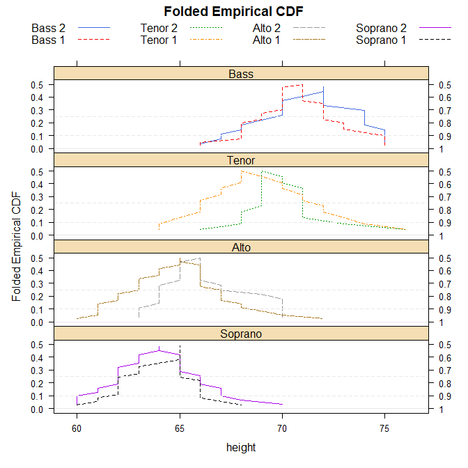

Homepage: https://kwstat.github.io/mountainplot/
Repository: https://github.com/kwstat/mountainplot
Key features:
- Extends lattice graphics to support multi-panel, multi-group mountainplots.
Usage
require(mountainplot)
data(singer, package = "lattice")
parts <- within(singer, {
section <- voice.part
section <- gsub(" 1", "", section)
section <- gsub(" 2", "", section)
section <- factor(section)
})
# Change levels to logical ordering
levels(parts$section) <- c("Bass","Tenor","Alto","Soprano")
mountainplot(~height|section, data = parts,
groups=voice.part, type='l',
layout=c(1,4),
main="Folded Empirical CDF",
auto.key=list(columns=4), as.table=TRUE)